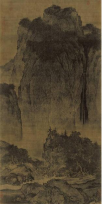
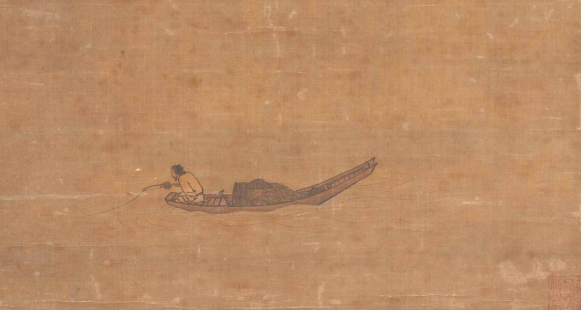
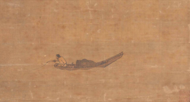
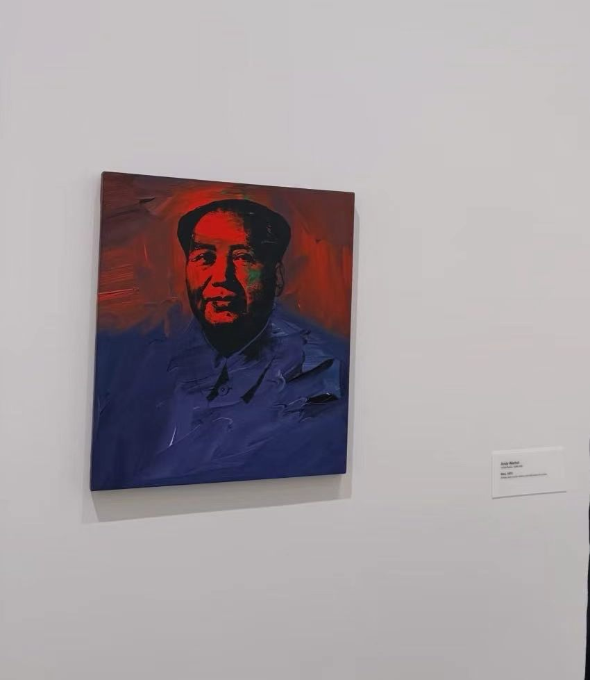
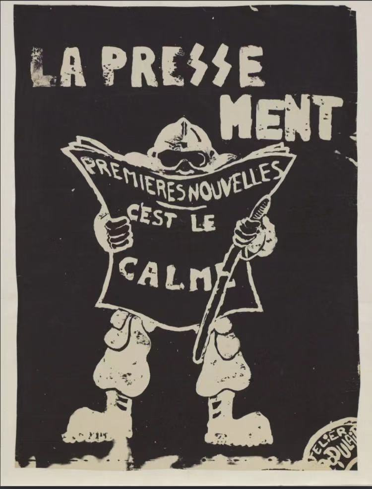
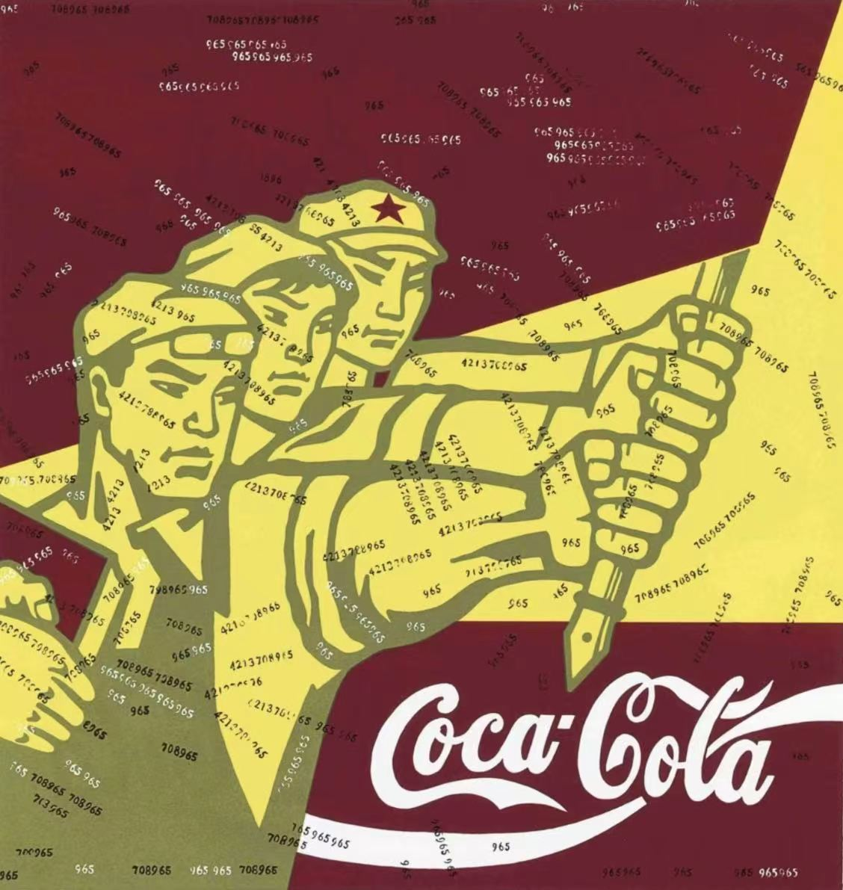
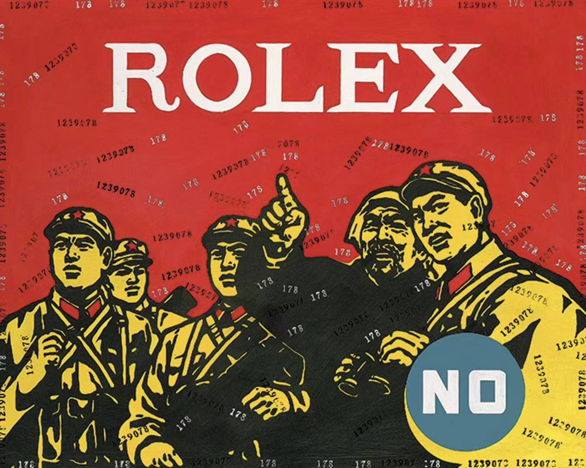
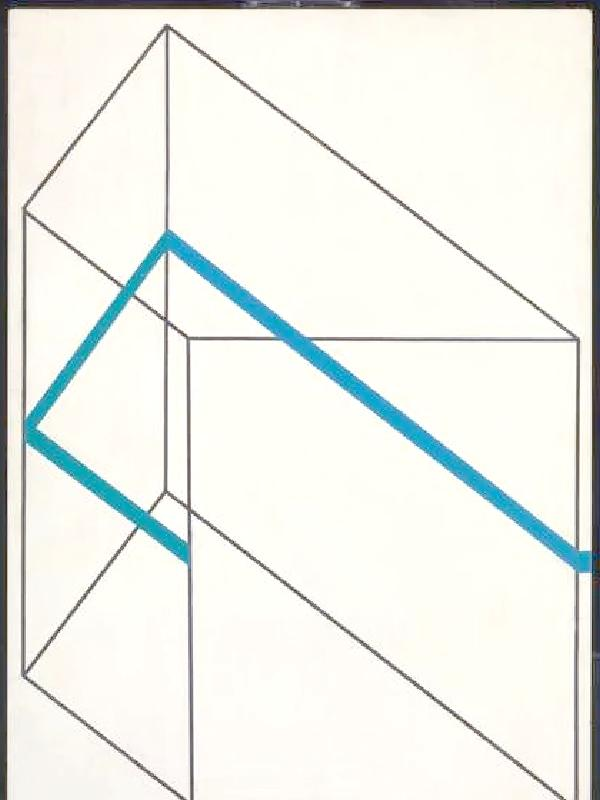

一个元素的跨文化旅行
从中国画到日本设计，再到西方艺术
追溯留白跨越千年、横贯东西的旅程
引入
清朝笪重光：空是"虚实相生"的哲学
西方罗伯特·雷曼：空是"白色这个颜色"
同一个"空"字，为何跨越东西方差异如此之大？
当一个共通的视觉元素跨域不同国界、不同时空、不同文化，它发生了什么适应性的变化？
是它自身变化了？还是解读它的人变了？
起源
"无用之用"
"有之以为利，无之以为用"
三十辐共一毂，当其无，有车之用
埏埴以为器，当其无，有器之用
"道法自然"
"知其白，守其黑"
黑白相生相依，互为条件
虚与实相互成全，方为虚实
"心斋""坐忘"
以达"虚静"
观空的方法
留白是"道"——难以道明却无处不在
笔墨是"有"，留白是"无"，无造就了画面的呼吸感和想象空间
变迁
从满构图到"马一角"，从外界到内心

范宽《溪山行旅图》
北宋 · 满构图
追求"大山大水"的气魄
画面几乎填满
对秩序感的歌颂

马远、夏圭
南宋 · "马一角"
景色压缩至画面一角/半边
其余皆是留白
从外界到内心

马远《寒江独钓图》
一叶扁舟 · 寒江独钓
分析
画面左中，一叶扁舟
一位垂钓的老翁
除此以外，剩下全是空白
精彩的不是这一叶扁舟，而是用一叶扁舟衬托出来的空白和意境
空白不是衬托船的绿叶背景，而是起主角作用的红花
没有了空白就失去了意境
"一千个人眼中有一千个哈姆雷特"
空白留给了观者极广的想象空间

倪瓒《容膝斋图》
元代
元代
远景：平缓的山景
中景：大量留白的水面
近景：坡石、枯树、空亭
"容膝亭"取自陶渊明"审容膝之易安"
寒舍虽小，心有乾坤大

尾形光琳《红白梅图屏风》
江户时代 · 琳派
日本
水流通过圆形波纹暗示，而非水墨晕染
营造空间深度 → 创造视觉节奏
阅读门槛降低
空从精神性转向视觉性
进入日本设计体系

罗伯特·雷曼《无题》1951
西方极简主义
西方
指向：颜料本身，非意境
门槛：观众看即可，无需想象
态度：拒绝叙事，"物即物"
情感：坚硬与冷漠
政治
在政治高压下，"空"成为无声的抵抗语言

Edward Krasinski "蓝线"系列
1960s 冷战波兰
空白墙面 + 一条蓝线
抽象艺术被视为"西方颓废形式主义"
空白画布本身即抵抗

八大山人《鱼鸭图》
明宗室 · 清初
明宗室家破人亡后削发为僧
画中只有沮丧孤独的一只鱼
其余皆是空白
比较
意境 → 哲学 → 心理 → 装饰 → 物质 → 政治
诗意 → 优雅 → 冷漠 → 压抑 → 荒寒
需要修养 → 不需要修养
需要哲学背景 → 需要时代背景
1. 尾形光琳：意境→设计，去精神化
2. 雷曼：虚空→物质，颠倒
3. Krasinski：成为反抗语言
留白的底层机制：邀请观看者参与构建意义
"不画比画更有意义，空缺比满盈更能激发想象"
结论
留白的意义是多变的，在不断重构的，不属于任何单一文化。
空只是空，
但是空又不只是空
跨文化的想象力和误读的过程使得留白流动起来